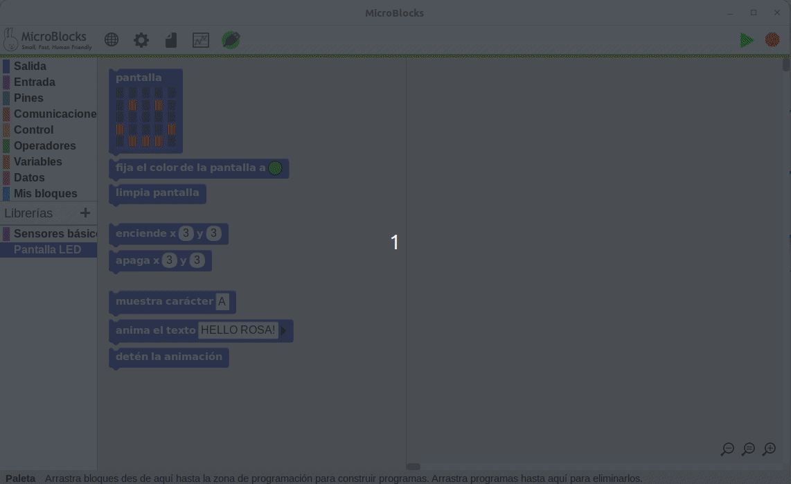
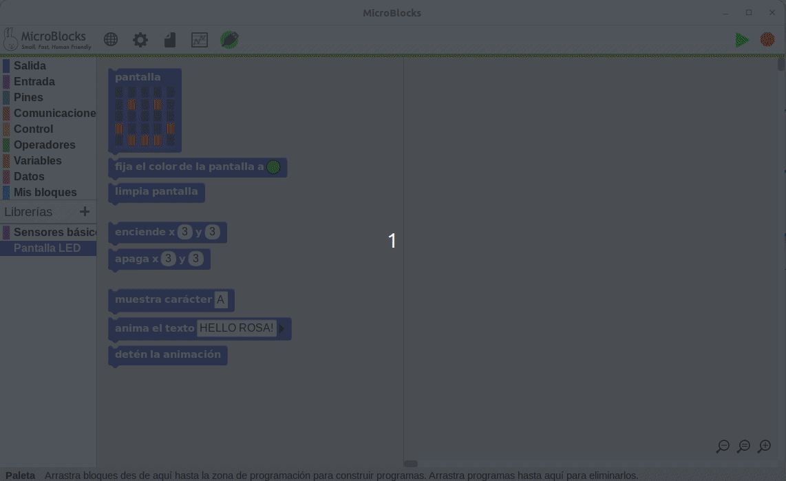
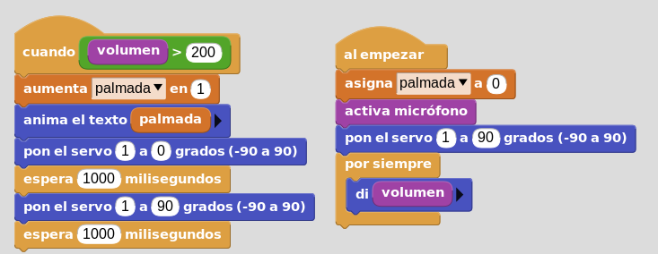

Librería micro
Antes de trabajar con el micro, debemos activar la librería micro en Microblocks.

Antes de trabajar con el micro, debemos activar la librería micro en Microblocks.

Si el volumen del micro sube de cierto valor (por ejemplo 200) la barrera sube y baja. Además microblocks en todo momento debe indicar el nivel de sonido, y en la pantalla de micro:bit debe indicarse el número de veces que se supera el umbral de sonido.
Código:

Obra publicada con Licencia Creative Commons Reconocimiento Compartir igual 4.0